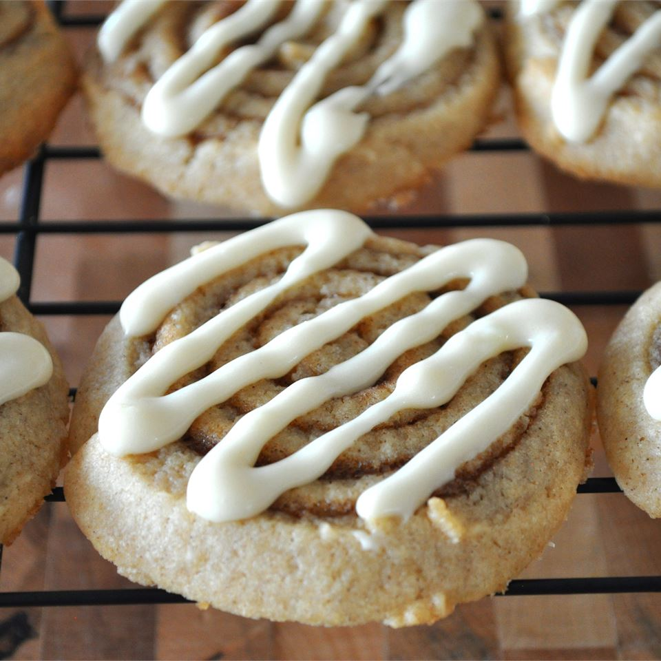

Cinnabon Cookies

OMG Cinnabon Cookies
These cookies are to die for
Ingredients
- 1/2 cup of softened butter
- 1/2 cup of butter flavoured shortening
- 1 cup of light brown sugar
- 1/2 cup of white sugar
- 2 eggs
- 1 tablespoon of vanilla extract
- 1 tablespoon of ground cinnamon
- 3 cups of all purpose flour
- 2 teaspoons of baking powder
- 1 teaspoon of salt
- 1/2 cup of brown sugar
- 1/4 cup of butter
- 2 teaspoons of ground cinnamon
Steps
-
In a large bowl, cream together the 1/2 cup butter, shortening, light brown sugar and white sugar until
smooth. Beat in the eggs one at a time then stir in the vanilla. Combine the 1 tablespoon cinnamon, flour,
baking powder and salt; stir into the creamed mixture. Cover and refrigerate dough for at least 1 hour.
-
Preheat the oven to 375 degrees F (190 degrees C). In a small microwave safe dish, heat the 1/2 cup brown
sugar, 1/4 cup of butter and 2 teaspoons cinnamon in the microwave. Stir frequently until butter is melted
and the mixture is well blended.
- On a lightly floured surface, roll out each half of the dough to a 12x6 inch rectangle. Spread 1/3 of the
cinnamon mixture over each rectangle. Roll each one lengthwise into a log. Cut into 1 inch segments. Use
remaining filling to place a small dollop of the mixture onto the cookie sheet where each cookie will be
placed, About every 3 inches. Place 1 cookie onto each dollop with the cut side down.
- Bake for 8 to 10 minutes in the preheated oven. Flip cookie sheet over onto a tray to remove cookies while
they are still very hot. If the cookies are stuck, heat the pan in the oven again for a few minutes to
soften the cinnamon dollops.
Source